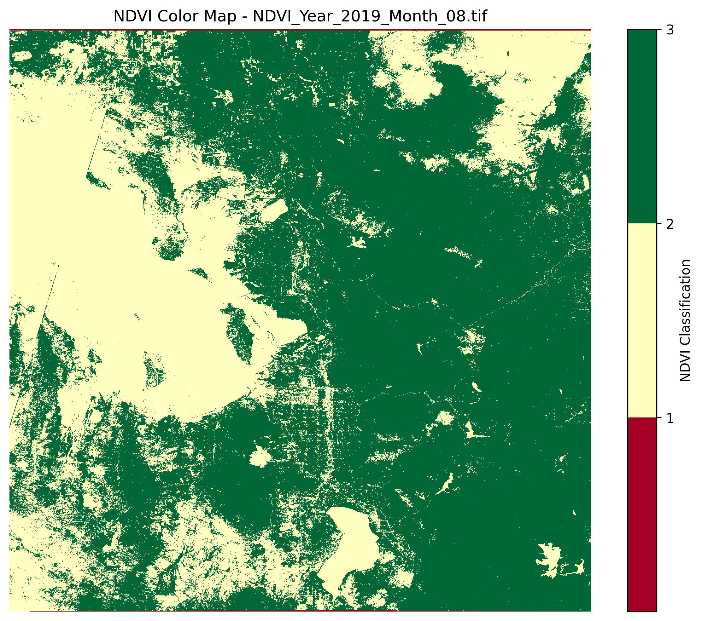
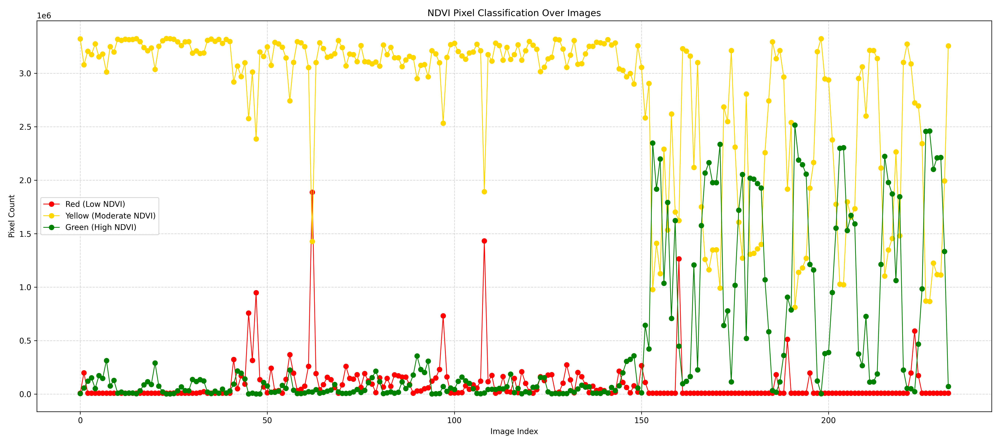
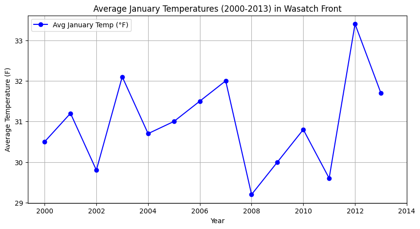

Environmental Monitoring
Welcome to Wasatch Watch
Tracking the environmental health of the Wasatch Front
Tracking the environmental health of the Wasatch Front
The Wasatch Front is experiencing rapid environmental changes, from rising temperatures to worsening air quality. By collecting and analyzing real-world data, we aim to provide insights into these shifts and their impact on local ecosystems and human health.

Using satellite imagery, we measure vegetation health through the Normalized Difference Vegetation Index (NDVI). This helps us track long-term changes in plant life, from seasonal shifts to the impact of droughts and urban development.

Rising temperatures and wildfires contribute to worsening air quality. Our data visualizations illustrate how these factors interact, showing trends in pollution levels, extreme heat days, and their potential effects on public health.
